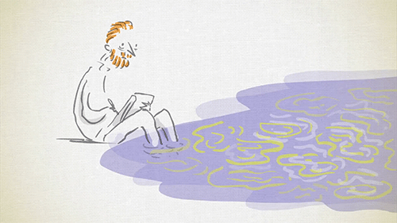

Las cosas no cambia por si solas.
Las cosas cambia cuando todos colaboramos.
Hagamos cada uno de nosotros lo que
nos corresponde, seamos parte de la solución
y no del problema.
Jamas dejemos de confiar en Dios,
que el tiene el control de todas las cosas
y más que nada el conoce lo que nos conviene
a cada uno de nosotros...
Confía en Dios.
No podemos permite que las heridas
del pasado sigan sangrando sobre el
presente y arruinen nuestro futuro
enfócate en el presente.
Habla con Dios y sana tu corazón

¡¡REGRESAR!!